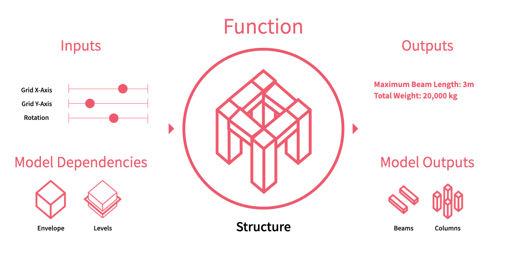

Making Hypar Functions
Hypar Functions are the building blocks of Hypar. They capture a piece of intelligence: the logic of some system, object, or process. Hypar functions can be created in a number of different ways: you can write C# Code, build an Excel spreadsheet, or develop a Grasshopper script.
By uploading a function to Hypar you can produce multiple options for a building problem in just a few seconds, and combine them with other people's functions to create rich, realistic designs.
All Hypar functions describe their inputs and their outputs. The various function languages treat these slightly differently, but the basic concepts are the same: you specify the information your function needs to run -- like numbers, boolean values, choices from a list, or elements from the model -- and you designate these pieces of information as Inputs and Model Dependencies. Similarly, you specify the information your function generates -- numerical data or other elements to be added to the model -- and designate these as Outputs and Model Outputs.

Choose a function language to learn more
- C#
- Grasshopper (Requires Rhino 6 or above)
- Excel